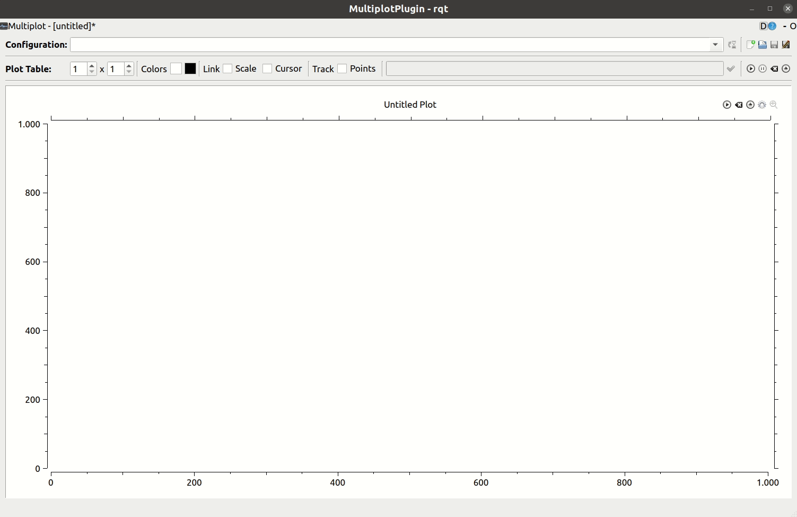
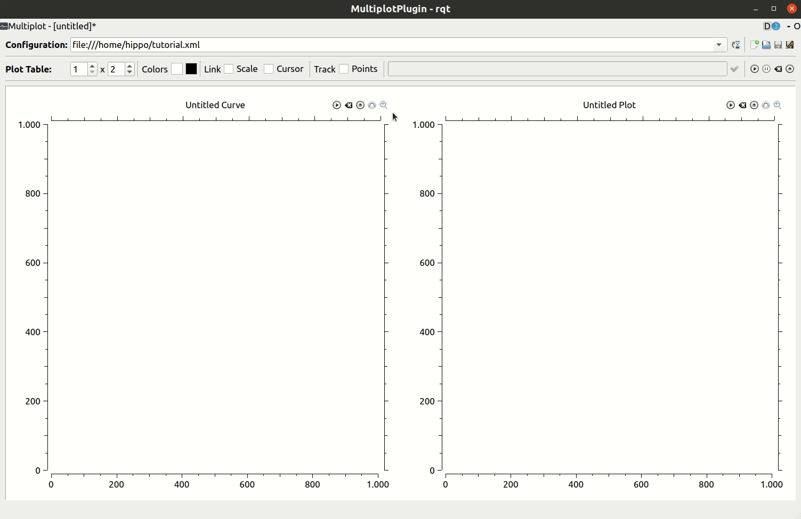
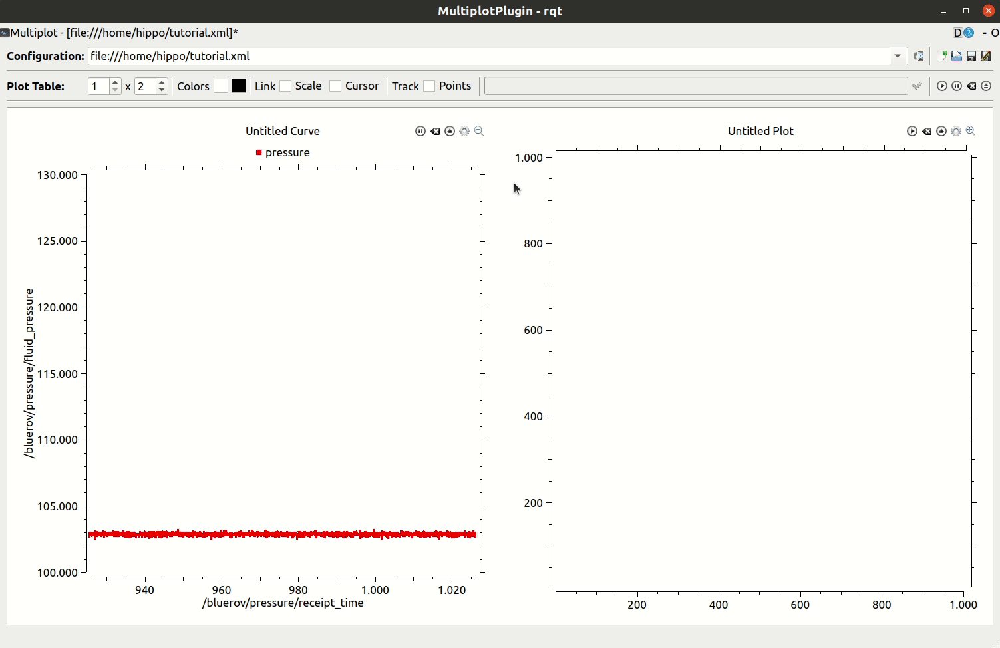
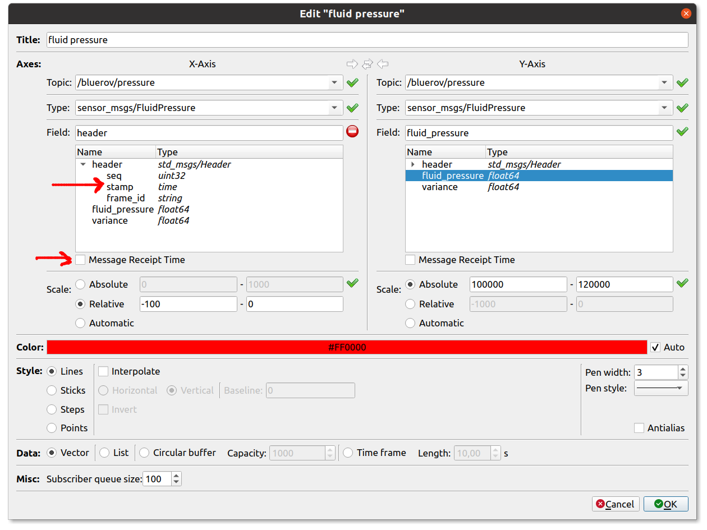
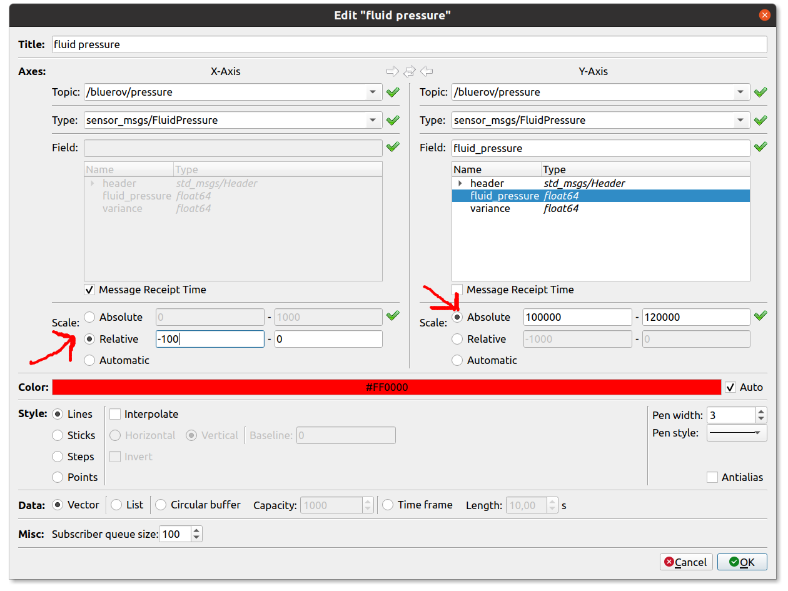
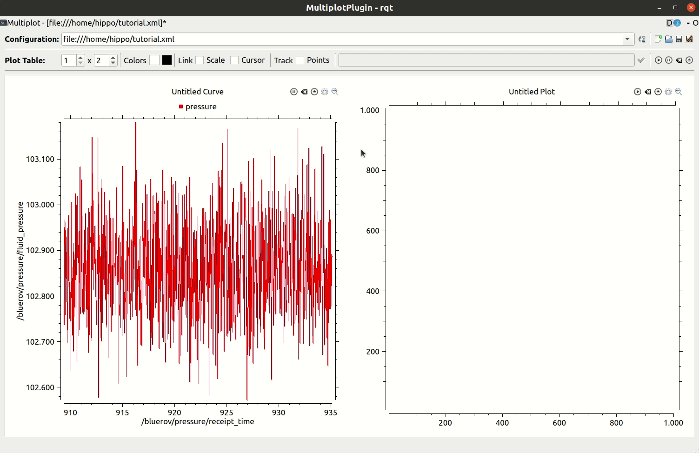

RQt Multiplot
Plotting data is crucial for analyzing (and debugging…) your setup.
A very simple tool is rqt_plot.
However, rqt_plot is excrutiatingly annoying to use. Downsides are: you can only plot data over time and it’s very hard to configure, not ideal at all!
Therefore, we highly recommend you use rqt_multiplot.
To install Multiplot, run
sudo apt install ros-noetic-rqt-multiplot
To tell rqt about this new plugin, run
rqt --force-discover
Now, you will be able to use the rqt_multiplot plugin from the rqt GUI. However, the GUI might look a bit overwhelming. If you prefer to launch your tools (rqt_graph, rqt_topic, …) in seperate windows, execute
rqt_multiplot
As the name says, rqt_multiplot can show multiple plots at the same time, like subfigures.
Multiplot Configuration
Adding subplots
You can add subfigures by changing the number of plots in the top left corner, as shown below. Be careful when decreasing number of subfigures, all configurations are lost when the subfigure is deleted.
Adding a curve
For adding a curve to your plot, click the little settings icon in the top right corner of the (sub)figure.
When adding new curves, you might need to press play (or stop and play again) to actually start displaying the data, as shown in the gif above.
You can also copy-paste curves, if you want to plot very similar data. This can be an absolute gamechanger in setting up plots 🥳!
Of course, Ctrl + C and V also work.
Plotting data over time
When plotting data over time, you have two options. You can either use the time stamp in a message’s header, or the message receipt time, see below. We recommend always using the message receipt time, especially since not every message type includes a header. You just need to check the box as shown below.
Axis scale
You can change the axis scale to relative to only display messages from a certain amount of time (e.g. the last 100 seconds: -100 to 0). Similarly, you can set absolute limits for your axes.
 Note
I have also changed the pen width to 3 in this gif here. That’s a good pen width so that you can see the lines on the big TV screen in our lab. We like to be able to see what you’re doing, too, and we’re all blind (and hate botchy setups)…
Hint
Keep things neat and give plots and curves proper names!
Hint
Theoretically, rqt_multiplot offers the option of exporting plots. Feel free to use this for your own documentation/notes/research diary. However, we do not want to see these exported plots in your submitted papers. (Correctly scaled) matlab plots or plots directly from Tikz are so much more readable! Also more aesthetically pleasing…
Multiplot Config Files
Even though rqt_multiplot is a lot nicer to configure than rqt_plot, it still takes time. Therefore, you really should save your configuration.
As always, give your config files meaningful names. We recommend preparing one for the lab sessions, too. This will save a lot of precious time!